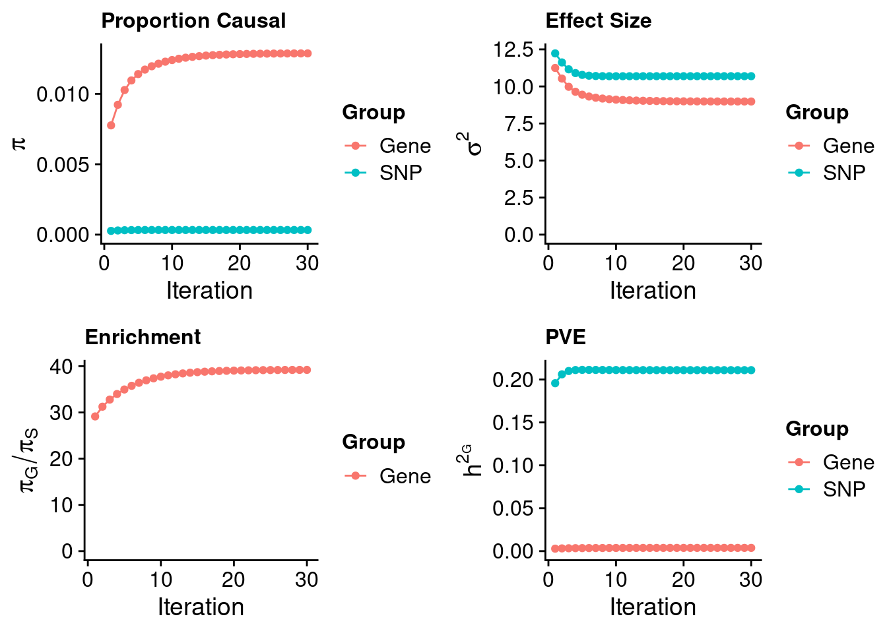
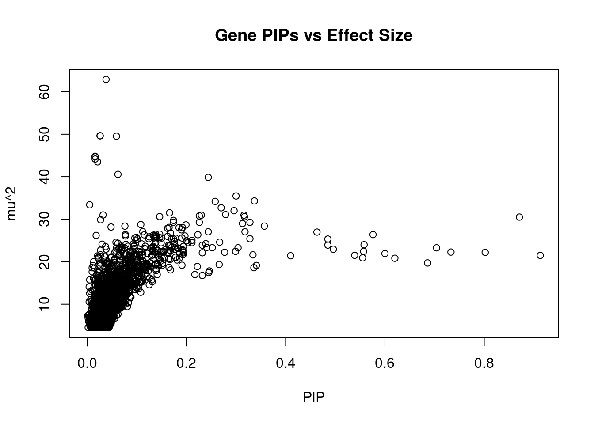
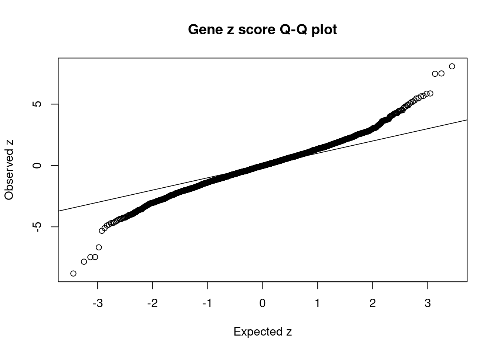
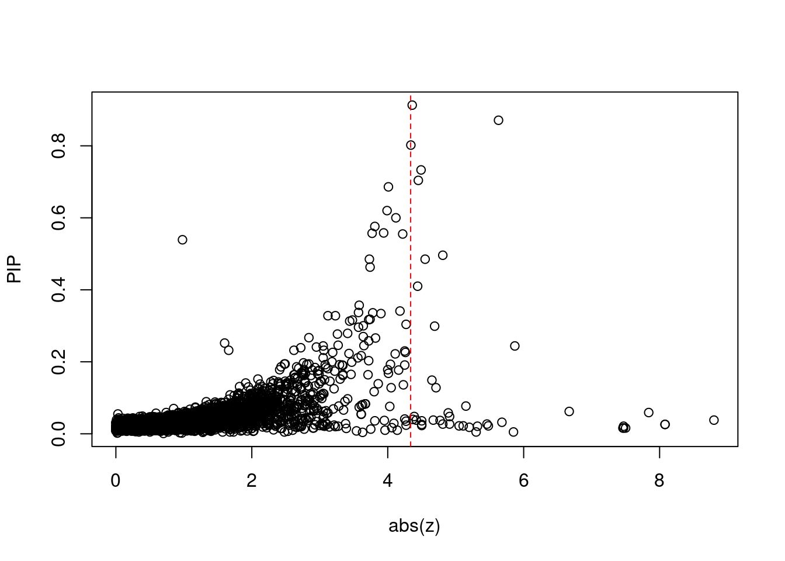
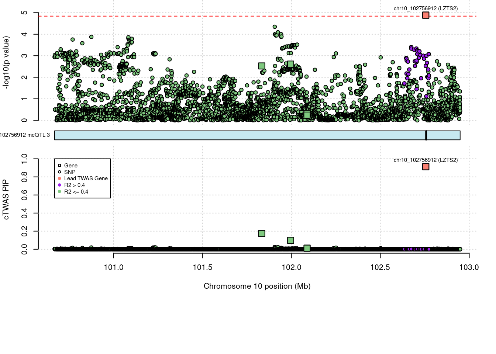
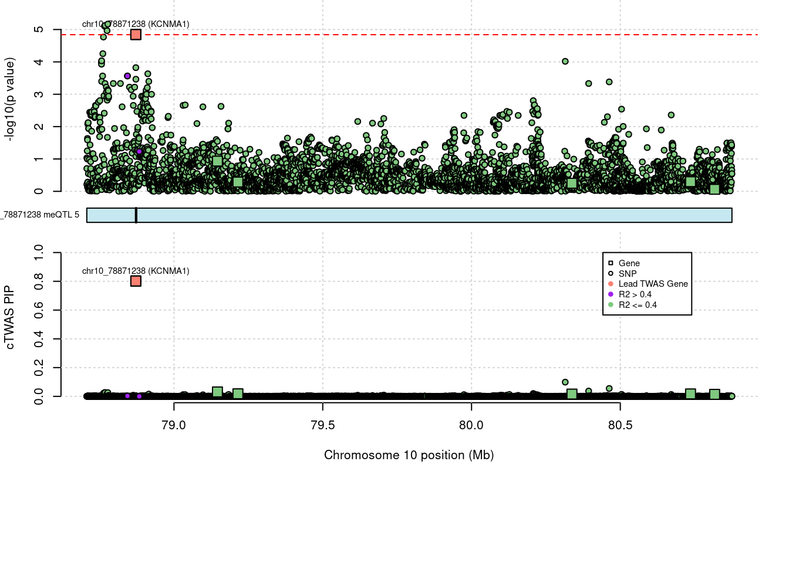

SCZ-ME
sheng Qian
2021-8-31
Last updated: 2022-09-05
Checks: 5 2
Knit directory: cTWAS_analysis/
This reproducible R Markdown analysis was created with workflowr (version 1.7.0). The Checks tab describes the reproducibility checks that were applied when the results were created. The Past versions tab lists the development history.
The R Markdown file has unstaged changes. To know which version of the R Markdown file created these results, you’ll want to first commit it to the Git repo. If you’re still working on the analysis, you can ignore this warning. When you’re finished, you can run wflow_publish to commit the R Markdown file and build the HTML.
Great job! The global environment was empty. Objects defined in the global environment can affect the analysis in your R Markdown file in unknown ways. For reproduciblity it’s best to always run the code in an empty environment.
The command set.seed(20211220) was run prior to running the code in the R Markdown file. Setting a seed ensures that any results that rely on randomness, e.g. subsampling or permutations, are reproducible.
Great job! Recording the operating system, R version, and package versions is critical for reproducibility.
Nice! There were no cached chunks for this analysis, so you can be confident that you successfully produced the results during this run.
Using absolute paths to the files within your workflowr project makes it difficult for you and others to run your code on a different machine. Change the absolute path(s) below to the suggested relative path(s) to make your code more reproducible.
| absolute | relative |
|---|---|
| /project2/xinhe/shengqian/cTWAS/cTWAS_analysis/data/SCZ_2018_ME/ | data/SCZ_2018_ME |
| /project2/xinhe/shengqian/cTWAS/cTWAS_analysis/code/ctwas_config_b37.R | code/ctwas_config_b37.R |
| /project2/xinhe/shengqian/cTWAS/cTWAS_analysis/data/UKBB/ieu-b-42.vcf.gz | data/UKBB/ieu-b-42.vcf.gz |
Great! You are using Git for version control. Tracking code development and connecting the code version to the results is critical for reproducibility.
The results in this page were generated with repository version d63d8a1. See the Past versions tab to see a history of the changes made to the R Markdown and HTML files.
Note that you need to be careful to ensure that all relevant files for the analysis have been committed to Git prior to generating the results (you can use wflow_publish or wflow_git_commit). workflowr only checks the R Markdown file, but you know if there are other scripts or data files that it depends on. Below is the status of the Git repository when the results were generated:
Ignored files:
Ignored: .Rhistory
Ignored: .ipynb_checkpoints/
Untracked files:
Untracked: G_list.RData
Untracked: Rplot.png
Untracked: SCZ_annotation.xlsx
Untracked: analysis/.ipynb_checkpoints/
Untracked: cache/
Untracked: code/.ipynb_checkpoints/
Untracked: data/.ipynb_checkpoints/
Untracked: data/FUMA_output/
Untracked: data/GO_Terms/
Untracked: data/IBD_ME/
Untracked: data/PGC3_SCZ_wave3_public.v2.tsv
Untracked: data/SCZ/
Untracked: data/SCZ_2014_EUR/
Untracked: data/SCZ_2014_EUR_ME/
Untracked: data/SCZ_2018/
Untracked: data/SCZ_2018_ME/
Untracked: data/SCZ_2018_S/
Untracked: data/SCZ_2020/
Untracked: data/SCZ_S/
Untracked: data/Supplementary Table 15 - MAGMA.xlsx
Untracked: data/Supplementary Table 20 - Prioritised Genes.xlsx
Untracked: data/T2D/
Untracked: data/UKBB/
Untracked: data/UKBB_SNPs_Info.text
Untracked: data/gene_OMIM.txt
Untracked: data/gene_pip_0.8.txt
Untracked: data/gwas_sumstats/
Untracked: data/magma.genes.out
Untracked: data/mashr_Heart_Atrial_Appendage.db
Untracked: data/mashr_sqtl/
Untracked: data/notes.txt
Untracked: data/scz_2018.RDS
Untracked: data/summary_known_genes_annotations.xlsx
Untracked: temp.regionlist.RDS
Untracked: temp.regions.txt
Untracked: temp.susieIrss.txt
Untracked: temp.temp.susieIrssres.Rd
Untracked: temp_LDR/
Untracked: temp_ld_R_chr1.txt
Untracked: temp_ld_R_chr10.txt
Untracked: temp_ld_R_chr11.txt
Untracked: temp_ld_R_chr12.txt
Untracked: temp_ld_R_chr13.txt
Untracked: temp_ld_R_chr14.txt
Untracked: temp_ld_R_chr15.txt
Untracked: temp_ld_R_chr16.txt
Untracked: temp_ld_R_chr17.txt
Untracked: temp_ld_R_chr18.txt
Untracked: temp_ld_R_chr19.txt
Untracked: temp_ld_R_chr2.txt
Untracked: temp_ld_R_chr20.txt
Untracked: temp_ld_R_chr21.txt
Untracked: temp_ld_R_chr22.txt
Untracked: temp_ld_R_chr3.txt
Untracked: temp_ld_R_chr4.txt
Untracked: temp_ld_R_chr5.txt
Untracked: temp_ld_R_chr6.txt
Untracked: temp_ld_R_chr7.txt
Untracked: temp_ld_R_chr8.txt
Untracked: temp_ld_R_chr9.txt
Untracked: temp_reg.txt
Untracked: top_genes_32.txt
Untracked: top_genes_37.txt
Untracked: top_genes_43.txt
Untracked: top_genes_54.txt
Untracked: top_genes_81.txt
Untracked: z_snp_pos_SCZ.RData
Untracked: z_snp_pos_SCZ_2014_EUR.RData
Untracked: z_snp_pos_SCZ_2018.RData
Untracked: z_snp_pos_SCZ_2020.RData
Unstaged changes:
Deleted: analysis/BMI_S_results.Rmd
Modified: analysis/IBD_ME_CpG_level.Rmd
Modified: analysis/SCZ_2014_EUR_ME_CpG_level.Rmd
Modified: analysis/SCZ_2018_ME_CpG_level.Rmd
Note that any generated files, e.g. HTML, png, CSS, etc., are not included in this status report because it is ok for generated content to have uncommitted changes.
These are the previous versions of the repository in which changes were made to the R Markdown (analysis/SCZ_2018_ME_CpG_level.Rmd) and HTML (docs/SCZ_2018_ME_CpG_level.html) files. If you’ve configured a remote Git repository (see ?wflow_git_remote), click on the hyperlinks in the table below to view the files as they were in that past version.
| File | Version | Author | Date | Message |
|---|---|---|---|---|
| Rmd | d63d8a1 | sq-96 | 2022-09-05 | update |
| html | d63d8a1 | sq-96 | 2022-09-05 | update |
| Rmd | 3f3d684 | sq-96 | 2022-09-05 | update |
Weight QC
#number of imputed weights
nrow(qclist_all)[1] 3463#number of imputed weights by chromosome
table(qclist_all$chr)
1 2 3 4 5 6 7 8 9 10 11 12 13 14 15 16 17 18 19 20
544 221 141 117 138 212 198 117 28 197 205 141 63 79 83 73 239 32 421 113
21 22
3 98 #proportion of imputed weights without missing variants
mean(qclist_all$nmiss==0)[1] 0.1611library(reticulate)
use_python("/scratch/midway2/shengqian/miniconda3/envs/PythonForR/bin/python",required=T)finish
| Version | Author | Date |
|---|---|---|
| d63d8a1 | sq-96 | 2022-09-05 |
#estimated group prior
estimated_group_prior <- estimated_group_prior_all[,ncol(group_prior_rec)]
print(estimated_group_prior) gene snp
0.0128758 0.0003285 #estimated group prior variance
estimated_group_prior_var <- estimated_group_prior_var_all[,ncol(group_prior_var_rec)]
print(estimated_group_prior_var) gene snp
8.983 10.692 #estimated enrichment
estimated_enrichment <- estimated_enrichment_all[ncol(group_prior_var_rec)]
print(estimated_enrichment)[1] 39.2#report sample size
print(sample_size)[1] 105318#report group size
print(group_size)[1] 3463 6324430#estimated group PVE
estimated_group_pve <- estimated_group_pve_all[,ncol(group_prior_rec)] #check PVE calculation
print(estimated_group_pve) gene snp
0.003803 0.210910 #total PVE
sum(estimated_group_pve)[1] 0.2147#PVE attributable to gene expression
estimated_group_pve["gene"]/sum(estimated_group_pve) gene
0.01771 Genes with highest PIPs

| Version | Author | Date |
|---|---|---|
| d63d8a1 | sq-96 | 2022-09-05 |
genename region_tag chrom id pos susie_pip mu2
3460 LZTS2 10_64 10 chr10_102756912 102755779 0.913 21.48
3445 DNAJC11 1_5 1 chr1_6711161 6708758 0.871 30.50
3453 KCNMA1 10_50 10 chr10_78871238 78871713 0.802 22.20
454 NaN 1_110 1 chr1_214154936 214154719 0.733 22.27
191 FOXO6 1_25 1 chr1_41845592 41843440 0.704 23.27
1838 DOCK1 10_79 10 chr10_128810484 128808908 0.686 19.71
300 GNG12 1_42 1 chr1_68297929 68298448 0.620 20.81
2673 CACNA1G 17_29 17 chr17_48677427 48674545 0.600 21.92
2595 GAS7 17_9 17 chr17_9940321 9938352 0.576 26.38
2283 TMCO3 13_62 13 chr13_114146138 114144842 0.558 24.00
2633 NaN 17_23 17 chr17_36982030 36979383 0.557 22.44
1974 AP000721.4 11_35 11 chr11_63742453 63744609 0.555 20.91
690 NaN 2_118 2 chr2_200468832 200466505 0.539 21.50
939 FIP1L1 4_39 4 chr4_54975388 54973200 0.496 22.93
2529 NaN 17_1 17 chr17_55235 53011 0.485 25.33
2558 CYB5D2 17_4 17 chr17_4065983 4063036 0.485 23.91
2569 DLG4 17_6 17 chr17_7100221 7101292 0.463 26.97
2685 SEPT4 17_34 17 chr17_56607967 56606915 0.410 21.40
39 NaN 1_3 1 chr1_4193882 4193426 0.357 28.37
105 NaN 1_15 1 chr1_22376938 22374032 0.341 19.13
PVE z num_meqtl
3460 1.9e-04 -4.36 3
3445 2.5e-04 5.63 5
3453 1.7e-04 -4.34 5
454 1.5e-04 4.49 4
191 1.6e-04 4.45 7
1838 1.3e-04 -4.01 9
300 1.2e-04 3.99 3
2673 1.2e-04 4.12 2
2595 1.4e-04 -3.81 2
2283 1.3e-04 -3.94 10
2633 1.2e-04 3.77 2
1974 1.1e-04 4.22 2
690 1.1e-04 0.98 9
939 1.1e-04 4.81 5
2529 1.2e-04 3.73 5
2558 1.1e-04 -4.55 8
2569 1.2e-04 3.74 1
2685 8.3e-05 4.44 4
39 9.6e-05 -3.58 3
105 6.2e-05 4.18 6Genes with largest effect sizes

| Version | Author | Date |
|---|---|---|
| d63d8a1 | sq-96 | 2022-09-05 |
genename region_tag chrom id pos susie_pip mu2
1185 NaN 6_21 6 chr6_27740509 27737605 0.038 62.88
1197 ZFP57 6_23 6 chr6_29648628 29645634 0.026 49.64
1206 ZFP57 6_23 6 chr6_29648507 29645634 0.026 49.62
1200 OR2J2 6_23 6 chr6_29141678 29139786 0.059 49.52
1189 NaN 6_22 6 chr6_28129481 28131153 0.016 44.80
1193 NaN 6_22 6 chr6_28129313 28126834 0.016 44.67
1191 ZSCAN16 6_22 6 chr6_28092343 28089699 0.016 44.16
1204 ZFP57 6_23 6 chr6_29648623 29645634 0.021 43.50
1380 MAD1L1 7_3 7 chr7_1980479 1979425 0.062 40.55
3387 L3MBTL2 22_17 22 chr22_41601298 41598933 0.244 39.84
143 NaN 1_20 1 chr1_31156665 31154025 0.300 35.46
3226 ADRA1D 20_4 20 chr20_4204693 4201984 0.337 34.30
2118 NaN 12_12 12 chr12_14926986 14924028 0.258 34.19
2199 ABCB9 12_75 12 chr12_123459832 123460823 0.005 33.39
2318 GPR137C 14_21 14 chr14_53022898 53023847 0.270 32.68
1692 CIZ1 9_66 9 chr9_130955380 130953553 0.296 32.00
3008 AC104534.3 19_26 19 chr19_39322471 39321899 0.166 31.50
181 RP11-329N22.1 1_24 1 chr1_38941882 38939282 0.279 31.09
2959 HAPLN4 19_15 19 chr19_19371927 19369435 0.032 31.00
171 NaN 1_22 1 chr1_36616030 36613704 0.230 30.96
PVE z num_meqtl
1185 2.3e-05 -8.80 5
1197 1.2e-05 8.08 8
1206 1.2e-05 8.08 8
1200 2.8e-05 -7.84 1
1189 7.0e-06 -7.47 3
1193 7.0e-06 -7.46 10
1191 6.8e-06 7.50 5
1204 8.8e-06 7.47 13
1380 2.4e-05 -6.67 4
3387 9.2e-05 5.87 1
143 1.0e-04 3.64 7
3226 1.1e-04 -3.57 6
2118 8.4e-05 3.72 8
2199 1.6e-06 5.85 1
2318 8.4e-05 -3.64 1
1692 9.0e-05 -3.57 11
3008 5.0e-05 -2.97 2
181 8.2e-05 3.41 3
2959 9.4e-06 5.68 5
171 6.7e-05 4.25 3Genes with highest PVE
genename region_tag chrom id pos susie_pip mu2
3445 DNAJC11 1_5 1 chr1_6711161 6708758 0.871 30.50
3460 LZTS2 10_64 10 chr10_102756912 102755779 0.913 21.48
3453 KCNMA1 10_50 10 chr10_78871238 78871713 0.802 22.20
191 FOXO6 1_25 1 chr1_41845592 41843440 0.704 23.27
454 NaN 1_110 1 chr1_214154936 214154719 0.733 22.27
2595 GAS7 17_9 17 chr17_9940321 9938352 0.576 26.38
1838 DOCK1 10_79 10 chr10_128810484 128808908 0.686 19.71
2283 TMCO3 13_62 13 chr13_114146138 114144842 0.558 24.00
300 GNG12 1_42 1 chr1_68297929 68298448 0.620 20.81
2529 NaN 17_1 17 chr17_55235 53011 0.485 25.33
2569 DLG4 17_6 17 chr17_7100221 7101292 0.463 26.97
2633 NaN 17_23 17 chr17_36982030 36979383 0.557 22.44
2673 CACNA1G 17_29 17 chr17_48677427 48674545 0.600 21.92
690 NaN 2_118 2 chr2_200468832 200466505 0.539 21.50
939 FIP1L1 4_39 4 chr4_54975388 54973200 0.496 22.93
1974 AP000721.4 11_35 11 chr11_63742453 63744609 0.555 20.91
2558 CYB5D2 17_4 17 chr17_4065983 4063036 0.485 23.91
3226 ADRA1D 20_4 20 chr20_4204693 4201984 0.337 34.30
143 NaN 1_20 1 chr1_31156665 31154025 0.300 35.46
39 NaN 1_3 1 chr1_4193882 4193426 0.357 28.37
PVE z num_meqtl
3445 2.5e-04 5.63 5
3460 1.9e-04 -4.36 3
3453 1.7e-04 -4.34 5
191 1.6e-04 4.45 7
454 1.5e-04 4.49 4
2595 1.4e-04 -3.81 2
1838 1.3e-04 -4.01 9
2283 1.3e-04 -3.94 10
300 1.2e-04 3.99 3
2529 1.2e-04 3.73 5
2569 1.2e-04 3.74 1
2633 1.2e-04 3.77 2
2673 1.2e-04 4.12 2
690 1.1e-04 0.98 9
939 1.1e-04 4.81 5
1974 1.1e-04 4.22 2
2558 1.1e-04 -4.55 8
3226 1.1e-04 -3.57 6
143 1.0e-04 3.64 7
39 9.6e-05 -3.58 3Genes with largest z scores
genename region_tag chrom id pos susie_pip mu2
1185 NaN 6_21 6 chr6_27740509 27737605 0.038 62.88
1197 ZFP57 6_23 6 chr6_29648628 29645634 0.026 49.64
1206 ZFP57 6_23 6 chr6_29648507 29645634 0.026 49.62
1200 OR2J2 6_23 6 chr6_29141678 29139786 0.059 49.52
1191 ZSCAN16 6_22 6 chr6_28092343 28089699 0.016 44.16
1189 NaN 6_22 6 chr6_28129481 28131153 0.016 44.80
1204 ZFP57 6_23 6 chr6_29648623 29645634 0.021 43.50
1193 NaN 6_22 6 chr6_28129313 28126834 0.016 44.67
1380 MAD1L1 7_3 7 chr7_1980479 1979425 0.062 40.55
3387 L3MBTL2 22_17 22 chr22_41601298 41598933 0.244 39.84
2199 ABCB9 12_75 12 chr12_123459832 123460823 0.005 33.39
2959 HAPLN4 19_15 19 chr19_19371927 19369435 0.032 31.00
3445 DNAJC11 1_5 1 chr1_6711161 6708758 0.871 30.50
1209 HLA-G 6_24 6 chr6_29796770 29797933 0.022 17.43
827 PCCB 3_84 3 chr3_135996211 135995498 0.027 29.88
1201 OR12D2 6_23 6 chr6_29365078 29363697 0.021 21.36
1810 WBP1L 10_66 10 chr10_104574429 104571436 0.005 15.73
2425 IREB2 15_37 15 chr15_78730334 78732754 0.018 26.19
1186 ZNF391 6_21 6 chr6_27357539 27354781 0.077 26.38
1208 NaN 6_24 6 chr6_29895260 29893575 0.022 17.80
PVE z num_meqtl
1185 2.3e-05 -8.80 5
1197 1.2e-05 8.08 8
1206 1.2e-05 8.08 8
1200 2.8e-05 -7.84 1
1191 6.8e-06 7.50 5
1189 7.0e-06 -7.47 3
1204 8.8e-06 7.47 13
1193 7.0e-06 -7.46 10
1380 2.4e-05 -6.67 4
3387 9.2e-05 5.87 1
2199 1.6e-06 5.85 1
2959 9.4e-06 5.68 5
3445 2.5e-04 5.63 5
1209 3.7e-06 5.48 1
827 7.6e-06 5.46 2
1201 4.3e-06 -5.32 1
1810 7.1e-07 5.30 7
2425 4.4e-06 5.20 1
1186 1.9e-05 5.15 18
1208 3.6e-06 -5.11 4Comparing z scores and PIPs

| Version | Author | Date |
|---|---|---|
| d63d8a1 | sq-96 | 2022-09-05 |

| Version | Author | Date |
|---|---|---|
| d63d8a1 | sq-96 | 2022-09-05 |
[1] 0.01242 genename region_tag chrom id pos susie_pip mu2
1185 NaN 6_21 6 chr6_27740509 27737605 0.038 62.88
1197 ZFP57 6_23 6 chr6_29648628 29645634 0.026 49.64
1206 ZFP57 6_23 6 chr6_29648507 29645634 0.026 49.62
1200 OR2J2 6_23 6 chr6_29141678 29139786 0.059 49.52
1191 ZSCAN16 6_22 6 chr6_28092343 28089699 0.016 44.16
1189 NaN 6_22 6 chr6_28129481 28131153 0.016 44.80
1204 ZFP57 6_23 6 chr6_29648623 29645634 0.021 43.50
1193 NaN 6_22 6 chr6_28129313 28126834 0.016 44.67
1380 MAD1L1 7_3 7 chr7_1980479 1979425 0.062 40.55
3387 L3MBTL2 22_17 22 chr22_41601298 41598933 0.244 39.84
2199 ABCB9 12_75 12 chr12_123459832 123460823 0.005 33.39
2959 HAPLN4 19_15 19 chr19_19371927 19369435 0.032 31.00
3445 DNAJC11 1_5 1 chr1_6711161 6708758 0.871 30.50
1209 HLA-G 6_24 6 chr6_29796770 29797933 0.022 17.43
827 PCCB 3_84 3 chr3_135996211 135995498 0.027 29.88
1201 OR12D2 6_23 6 chr6_29365078 29363697 0.021 21.36
1810 WBP1L 10_66 10 chr10_104574429 104571436 0.005 15.73
2425 IREB2 15_37 15 chr15_78730334 78732754 0.018 26.19
1186 ZNF391 6_21 6 chr6_27357539 27354781 0.077 26.38
1208 NaN 6_24 6 chr6_29895260 29893575 0.022 17.80
PVE z num_meqtl
1185 2.3e-05 -8.80 5
1197 1.2e-05 8.08 8
1206 1.2e-05 8.08 8
1200 2.8e-05 -7.84 1
1191 6.8e-06 7.50 5
1189 7.0e-06 -7.47 3
1204 8.8e-06 7.47 13
1193 7.0e-06 -7.46 10
1380 2.4e-05 -6.67 4
3387 9.2e-05 5.87 1
2199 1.6e-06 5.85 1
2959 9.4e-06 5.68 5
3445 2.5e-04 5.63 5
1209 3.7e-06 5.48 1
827 7.6e-06 5.46 2
1201 4.3e-06 -5.32 1
1810 7.1e-07 5.30 7
2425 4.4e-06 5.20 1
1186 1.9e-05 5.15 18
1208 3.6e-06 -5.11 4Loading required package: S4VectorsLoading required package: stats4Loading required package: BiocGenerics
Attaching package: 'BiocGenerics'The following objects are masked from 'package:stats':
IQR, mad, sd, var, xtabsThe following objects are masked from 'package:base':
anyDuplicated, append, as.data.frame, basename, cbind, colnames,
dirname, do.call, duplicated, eval, evalq, Filter, Find, get, grep,
grepl, intersect, is.unsorted, lapply, Map, mapply, match, mget,
order, paste, pmax, pmax.int, pmin, pmin.int, Position, rank,
rbind, Reduce, rownames, sapply, setdiff, sort, table, tapply,
union, unique, unsplit, which.max, which.min
Attaching package: 'S4Vectors'The following object is masked from 'package:base':
expand.gridLoading required package: IRangesLoading required package: GenomicRangesLoading required package: GenomeInfoDbLoading required package: grida <- locus_plot_final_pub(region_tag="10_64", return_table=T,
focus=NULL,
label_genes=NULL,
rerun_ctwas=F,
rerun_load_only=F,
label_panel="both",
legend_side="left",
legend_panel="cTWAS")
| Version | Author | Date |
|---|---|---|
| d63d8a1 | sq-96 | 2022-09-05 |
a <- locus_plot_final_pub(region_tag="1_5", return_table=T,
focus=NULL,
label_genes=NULL,
rerun_ctwas=F,
rerun_load_only=F,
label_panel="both",
legend_side="left",
legend_panel="cTWAS")
| Version | Author | Date |
|---|---|---|
| d63d8a1 | sq-96 | 2022-09-05 |
a <- locus_plot_final_pub(region_tag="10_50", return_table=T,
focus=NULL,
label_genes=NULL,
rerun_ctwas=F,
rerun_load_only=F,
label_panel="both",
legend_side="right",
legend_panel="cTWAS")
| Version | Author | Date |
|---|---|---|
| d63d8a1 | sq-96 | 2022-09-05 |
sessionInfo()R version 4.1.0 (2021-05-18)
Platform: x86_64-pc-linux-gnu (64-bit)
Running under: Scientific Linux 7.4 (Nitrogen)
Matrix products: default
BLAS/LAPACK: /software/openblas-0.3.13-el7-x86_64/lib/libopenblas_haswellp-r0.3.13.so
locale:
[1] LC_CTYPE=en_US.UTF-8 LC_NUMERIC=C
[3] LC_TIME=en_US.UTF-8 LC_COLLATE=en_US.UTF-8
[5] LC_MONETARY=en_US.UTF-8 LC_MESSAGES=en_US.UTF-8
[7] LC_PAPER=en_US.UTF-8 LC_NAME=C
[9] LC_ADDRESS=C LC_TELEPHONE=C
[11] LC_MEASUREMENT=en_US.UTF-8 LC_IDENTIFICATION=C
attached base packages:
[1] grid stats4 stats graphics grDevices utils datasets
[8] methods base
other attached packages:
[1] Gviz_1.38.4 GenomicRanges_1.46.0 GenomeInfoDb_1.26.7
[4] IRanges_2.24.1 S4Vectors_0.28.1 BiocGenerics_0.40.0
[7] biomaRt_2.50.0 cowplot_1.1.1 ggplot2_3.3.6
[10] reticulate_1.26 workflowr_1.7.0
loaded via a namespace (and not attached):
[1] backports_1.2.1 Hmisc_4.5-0
[3] BiocFileCache_2.2.0 lazyeval_0.2.2
[5] splines_4.1.0 BiocParallel_1.28.0
[7] digest_0.6.29 ensembldb_2.18.4
[9] htmltools_0.5.3 fansi_1.0.3
[11] magrittr_2.0.3 checkmate_2.0.0
[13] memoise_2.0.1 BSgenome_1.62.0
[15] cluster_2.1.2 Biostrings_2.62.0
[17] matrixStats_0.62.0 prettyunits_1.1.1
[19] jpeg_0.1-8.1 colorspace_2.0-3
[21] blob_1.2.3 rappdirs_0.3.3
[23] xfun_0.24 dplyr_1.0.9
[25] callr_3.7.0 crayon_1.5.1
[27] RCurl_1.98-1.6 jsonlite_1.8.0
[29] survival_3.2-11 VariantAnnotation_1.40.0
[31] glue_1.6.2 gtable_0.3.0
[33] zlibbioc_1.40.0 XVector_0.34.0
[35] DelayedArray_0.20.0 scales_1.2.0
[37] DBI_1.1.2 Rcpp_1.0.9
[39] progress_1.2.2 htmlTable_2.2.1
[41] foreign_0.8-81 bit_4.0.4
[43] Formula_1.2-4 htmlwidgets_1.5.3
[45] httr_1.4.3 RColorBrewer_1.1-3
[47] ellipsis_0.3.2 pkgconfig_2.0.3
[49] XML_3.99-0.6 farver_2.1.0
[51] nnet_7.3-16 sass_0.4.0
[53] dbplyr_2.1.1 utf8_1.2.2
[55] here_1.0.1 tidyselect_1.1.2
[57] labeling_0.4.2 rlang_1.0.4
[59] later_1.2.0 AnnotationDbi_1.56.1
[61] munsell_0.5.0 tools_4.1.0
[63] cachem_1.0.6 cli_3.3.0
[65] generics_0.1.2 RSQLite_2.2.14
[67] evaluate_0.15 stringr_1.4.0
[69] fastmap_1.1.0 yaml_2.2.1
[71] processx_3.5.3 knitr_1.33
[73] bit64_4.0.5 fs_1.5.2
[75] purrr_0.3.4 KEGGREST_1.34.0
[77] AnnotationFilter_1.18.0 whisker_0.4
[79] xml2_1.3.2 compiler_4.1.0
[81] rstudioapi_0.13 filelock_1.0.2
[83] curl_4.3.2 png_0.1-7
[85] tibble_3.1.7 bslib_0.4.0
[87] stringi_1.7.6 highr_0.9
[89] ps_1.7.0 GenomicFeatures_1.46.1
[91] lattice_0.20-44 ProtGenerics_1.26.0
[93] Matrix_1.3-3 vctrs_0.4.1
[95] pillar_1.7.0 lifecycle_1.0.1
[97] jquerylib_0.1.4 data.table_1.14.2
[99] bitops_1.0-7 httpuv_1.6.1
[101] rtracklayer_1.54.0 R6_2.5.1
[103] BiocIO_1.4.0 latticeExtra_0.6-29
[105] promises_1.2.0.1 gridExtra_2.3
[107] dichromat_2.0-0.1 assertthat_0.2.1
[109] SummarizedExperiment_1.24.0 rprojroot_2.0.3
[111] rjson_0.2.20 withr_2.5.0
[113] GenomicAlignments_1.30.0 Rsamtools_2.10.0
[115] GenomeInfoDbData_1.2.7 parallel_4.1.0
[117] hms_1.1.1 rpart_4.1-15
[119] rmarkdown_2.9 MatrixGenerics_1.6.0
[121] git2r_0.28.0 biovizBase_1.42.0
[123] getPass_0.2-2 Biobase_2.54.0
[125] base64enc_0.1-3 restfulr_0.0.13